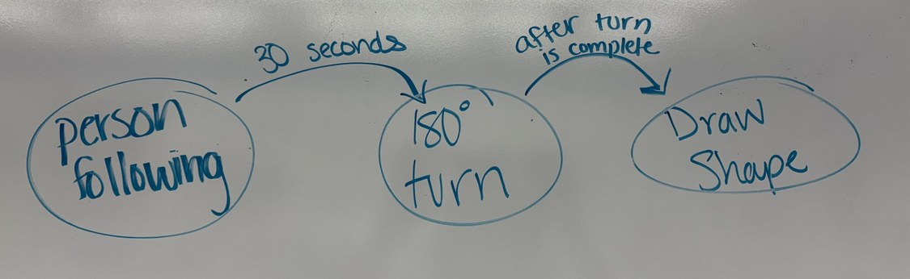
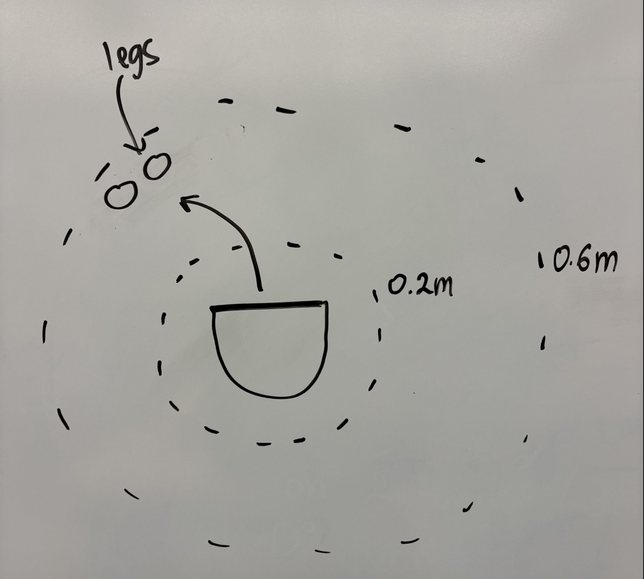
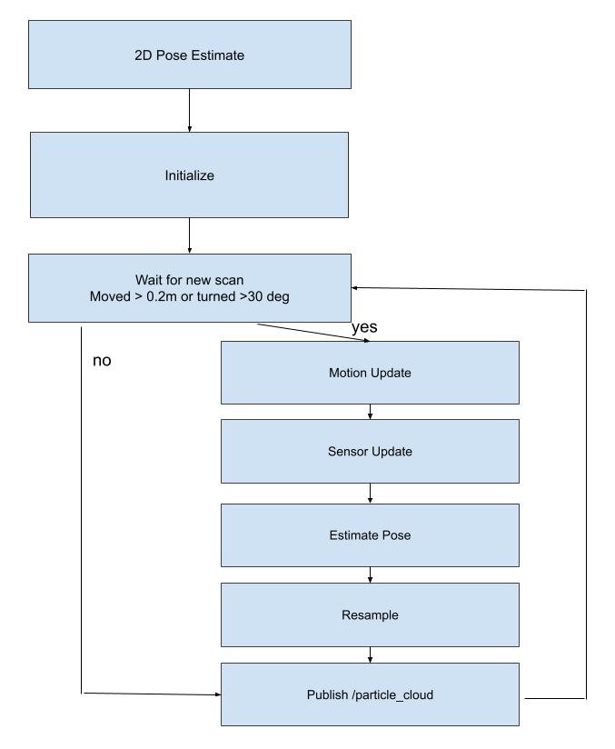
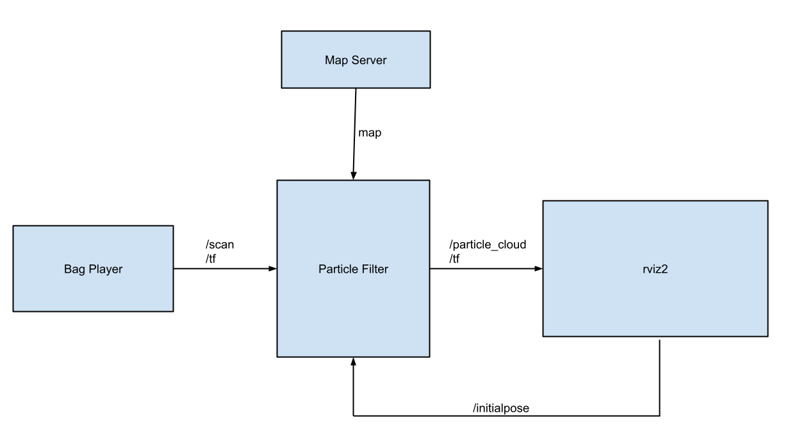

Robotics Software: State Machine, Particle Filter & Computer Vision
Robot behaviors, localization, and vision written in ROS2 and Python.
Overview
Since September 2026, I've been working on a set of robotics software projects for Computational Introduction to Robotics (ENGR3590) at Olin, using ROS2 and Python on Neato robots, both real and simulated: a finite state machine that chains robot behaviors, a particle filter that localizes a robot on a known map, and a computer-vision eye-tracking system that's still in progress.
Code on GitHub: State Machine, Particle Filter.
My role
I built the state machine and the particle filter, each with a teammate, writing in Python and ROS2 and testing with rviz2, Gazebo, and recorded ROS bags. In the state machine I wrote the person-following behavior. In the particle filter I wrote the odometry motion update, the laser weighting, the random particle injection, and the augmented Monte Carlo logic that lets the filter recover when the robot is kidnapped.
Design & build
Finite state machine
The robot runs three behaviors linked in one finite state machine. It searches by driving forward slowly until its lidar sees an object within 0.6 m, follows that person for 30 seconds at a 0.2 m distance, turns 180° in place, then draws a pentagon with 72° turns at each corner. Following uses proportional control on all 361 lidar readings per scan, and keeps turning toward the last-seen angle for 0.7 s if it loses the target. The bump sensor acts as an emergency stop that overrides every state. Everything runs from a timer-driven loop every 0.1 s instead of sleeps, so the emergency stop keeps working even mid-turn.


The real Neato behaved differently from the simulator: we had to increase the detection radius on the real robot, and because the turn and the pentagon are timed rather than measured, they drift on the physical robot. Adding odometry feedback to those two states is the next improvement.
Particle filter
Odometry drifts, and lidar alone can't tell similar-looking places apart, so the particle filter combines both to estimate the robot's pose on a known map. It starts with 1,050 particles: 1,000 spread around the initial pose estimate and 50 spread uniformly over the map. Each time the robot moves 0.2 m or turns π/6, every particle is moved by the odometry change plus noise, then weighted with a likelihood field that scores how well every fifth lidar beam lines up with the map. The pose estimate is the weighted mean, with heading averaged on the circle so it wraps correctly at ±π. Resampling adds noise, and adaptive injection (augmented Monte Carlo localization) adds random particles when the fit gets worse, which lets the filter recover after being moved.
The hardest bug in my motion update was a coordinate frame problem: particles moved in the wrong direction
whenever their heading differed from the robot's odometry heading. The odometry change is in the odom
frame, but each particle needs it in its own frame, so the rotation has to go from the odom frame to the
robot frame to the particle frame, and a few sin terms had flipped signs. We caught it by
turning off the laser update and watching the cloud drive sideways in rviz2.


Fixed vs. adaptive injection
Our first resampler injected a fixed 25 random particles (4% of the 625-particle cloud we used at the time) every update. That never adapts: when the filter is tracking well, the random particles are just noise that dies out at the next resample, and when the robot is lost, 25 particles spread over the whole map are almost never enough for one to land near the real pose. We replaced it with adaptive injection, which adds at least 5 random particles and up to the whole cloud depending on how much worse the current scan matches than usual. When the filter is confident, almost the whole cloud tracks the robot; when the scans suddenly match worse, the filter assumes it's lost and replaces a large part of the cloud with random particles to search the map.
We tested in stages: unit tests with pytest for weight normalization, angle wrapping, heading averaging, and initialization, then recorded bags in rviz2, then the Gauntlet world in Gazebo.
Eye tracking (in progress)
With a teammate, I'm starting a computer-vision project that turns eye movement into mouse control: a laptop webcam estimates where the user is looking on the screen and moves the cursor there, and a deliberate blink of the left or right eye acts as a left or right click. The plan is to use MediaPipe and OpenCV facial landmarks to find the irises, write our own calibration that maps eye position to screen coordinates, and smooth the noisy gaze point with a Kalman filter. The first goal is cursor movement from eye tracking, even at low accuracy; the stretch goal is wink clicking and snapping the cursor to clickable spots on the screen. The idea is aimed at accessibility, so people with limited mobility can use a computer with just their eyes, and the same approach could later steer an assistive robot arm.
Results
- The Neato follows a person, turns, and draws a pentagon, with a bump-sensor emergency stop that works in every state
- The particle filter converged in 7–8 updates on recorded bags of the MAC 1st floor, with the main particle cluster within 0.22 m on average
- It recovered from a 0.7 m kidnapping after 22 updates; a 2.8 m kidnapping locked onto the wrong spot
What I learned
- Plan before coding. On the state machine we jumped straight into coding the behaviors and had to reorganize our files and merge code later. Sketching the behaviors and laying out the files and pseudocode first would have saved that time.
- The real robot isn't the simulator. Friction and other real-world effects made the timed turn and pentagon angles inaccurate on the physical Neato, even though they were clean in the simulator.
- Test in stages and visualize everything. Testing each function on its own made errors easy to find, and watching the particle cloud in rviz2 showed whether there was enough noise and enough random particles.
- A particle filter needs randomness. The uniform starting grid, clusters collapsing onto one point, and the robot getting stuck in the wrong spot after a kidnapping were all fixed by adding noise and random particles.
- Use bags for debugging. Replaying recorded bags kept the sensor input constant, which made it much easier to debug and tune parameters, and our data collection script let us measure the filter's performance instead of guessing from the visuals.
- Divide the work clearly. We both wrote the same pose-update function without realizing it, which caused merge conflicts; after that we claimed functions up front and pulled before every commit.
Next steps
- Use odometry feedback instead of timing for the state machine's turn and pentagon.
- Smooth the particle filter's pose estimate, which jumps a little after each resample, with a Kalman filter.
- Only place random particles in free space, since some currently land inside obstacles where the robot can't be.
- Try ray casting instead of a likelihood field for more accurate (but slower) scan scoring, and bring back grid sampling with faster convergence to improve kidnapping recovery.
- Get the eye-tracking cursor working, then add blink clicking.